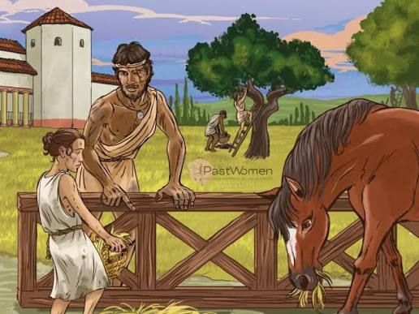
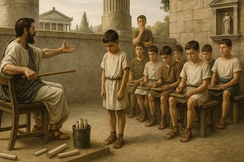
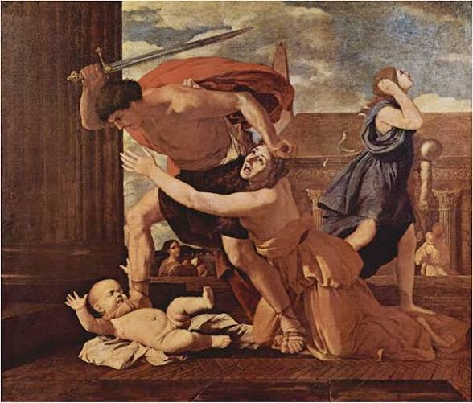
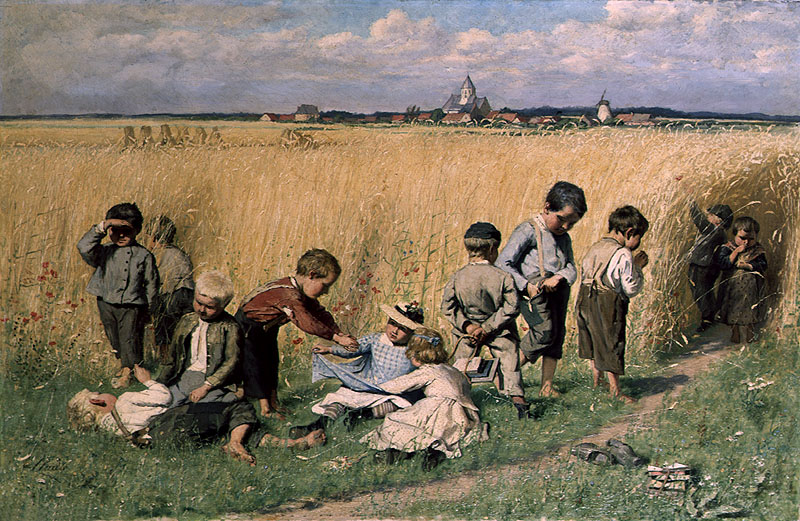
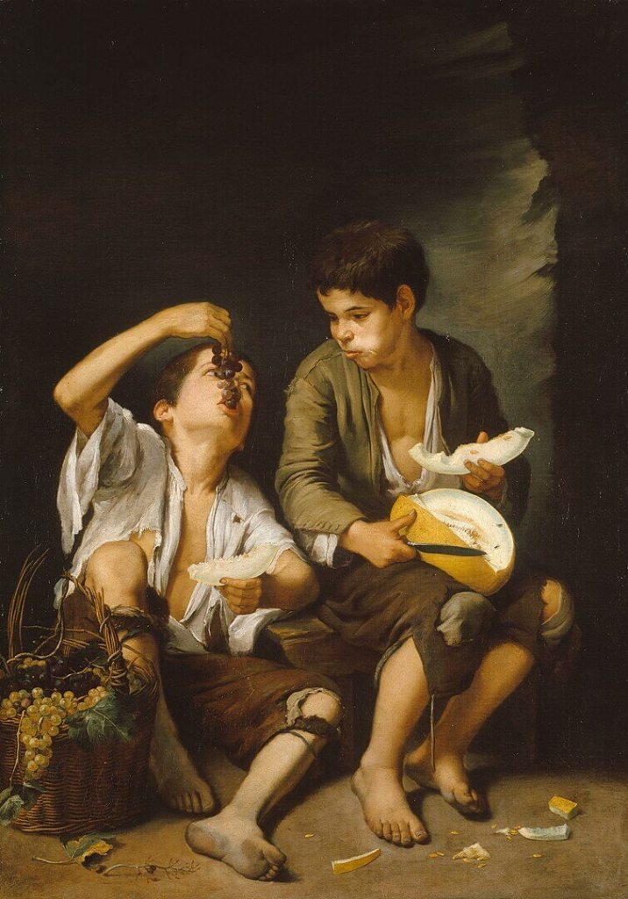
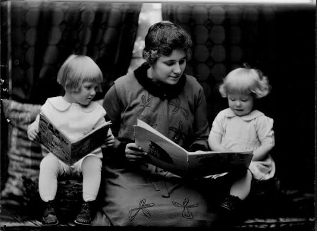
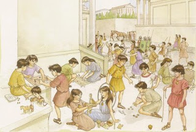
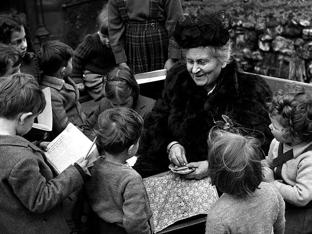

Este sitio web tiene como propósito conocer cómo han cambiado las concepciones sobre los niños, las niñas, la niñez y las infancias a través de la historia.
Realizaremos un recorrido por diferentes épocas, identificando los principales cambios sociales y culturales y su influencia en la manera de comprender la infancia.
Finalmente, reflexionaremos sobre el reconocimiento de los niños y las niñas como sujetos de derechos y sobre la importancia de estos cambios para la educación infantil.
Mi nombre es Nayarit, soy estudiante de Licenciatura en Educación Infantil, elegí esta carrera porque me apasiona trabajar con los niños y contribuir a su desarrollo y aprendizaje.
Soy Juliana Domínguez Ortega, estudiante de Licenciatura en Educación Infantil. Me gusta aprender y aportar al desarrollo de los niños y las niñas.
Mi nombre es Nayelis Acosta Ozuna y actualmente soy estudiante de Licenciatura en Educación Infantil. Me apasiona conocer y comprender los procesos de aprendizaje de los niños y las niñas.
Hola mi nombre es Rosa Ycela Mejía Soraca hago parte del segundo semestre de licenciatura en pedagogía infantil. Soy una persona muy comprometida y me gusta alcanzar todas mis metas trazadas.
Estudiante de Educación Infantil, interesada en el desarrollo integral de los niños y las niñas y en contribuir a una educación significativa e inclusiva.
Periodo: 3000 a.C. – Siglo V d.C
Sociedades fuertemente jerarquizadas y patriarcales. El padre (pater familias) tenía el derecho absoluto sobre la vida de los miembros del hogar, lo que incidía en una desvalorización social de los menores.
Prácticas como el infanticidio (especialmente de niñas o niños con discapacidad) y el abandono eran toleradas. En culturas como la espartana, el enfoque era puramente militar; en la ateniense, se priorizaba la formación intelectual, pero solo para varones libres.
No existía el concepto de niñez. El niño era considerado una propiedad de los padres o del Estado, visto como un "adulto en miniatura" o un proyecto de ciudadano/soldado, carente de valor intrínseco en sus primeros años.
Aristóteles y Platón. Aportaron las primeras ideas sobre la educación cívica y la formación moral del ciudadano, aunque siempre desde una perspectiva adultocéntrica y estatal.
La instauración de la Paideia griega como primer modelo educativo estructurado.



Siglo V d.C. – Siglo XV d.C. (476 – 1492)
Sociedad feudal y agraria. Alta mortalidad infantil que generaba un desapego emocional preventivo en las familias. Los niños se integraban rápidamente como mano de obra en el campo o en oficios.
Fuertemente marcado por el cristianismo. Se concebía al niño como un ser portador del "pecado original", lo que justificaba una educación basada en el rigor, el castigo físico y la sumisión para "enderezar" su alma.
El niño continuaba siendo un adulto pequeño. A partir de los 7 años, compartía ropa, juegos, trabajo y espacios sociales con los adultos, sin que se reconociera la necesidad de protección o cuidados especiales.
San Agustín y Santo Tomás de Aquino. Sus aportes consolidaron la visión teológica de la educación, enfocada en la moralidad cristiana y la disciplina espiritual.
Transformaciones e hitos: Surgimiento de las primeras escuelas monásticas y catedralicias, aunque restringidas al clero y la nobleza.


Siglo XV d.C. – Finales del Siglo XVIII (1492 – 1789)
Ascenso de la burguesía y transformación de la familia, que pasa a ser más nuclear y privada. Se reduce la necesidad de integrar a los niños tan temprano al trabajo en las clases acomodadas.
El Renacimiento y la Ilustración traen el Humanismo y el uso de la razón. Se empieza a valorar la educación como motor de progreso social y moral.
Ocurre el "descubrimiento de la infancia". El niño comienza a ser visto como un ser diferente al adulto: inocente, maleable, con una naturaleza propia y necesitado de amor, cuidado y, sobre todo, escolarización.
Juan Amos Comenio: Considerado el padre de la pedagogía, propuso una educación universal y estructurada por edades (Didáctica Magna).
Jean-Jacques Rousseau: En su obra Emilio, postuló que el niño es bueno por naturaleza y debe aprender de su propia experiencia.
Institucionalización de la escuela. Separación del mundo infantil del mundo adulto (surgimiento de juguetes, ropa y literatura específica para niños).



Las transformaciones históricas desde la Antigüedad hasta la Edad Moderna demuestran que la "infancia" no es un hecho natural, sino una construcción social.
Pasar de concebir al niño como una propiedad descartable (Edad Antigua) o un adulto en miniatura (Edad Media), a reconocerlo como un ser en desarrollo que necesita cuidado y educación (Edad Moderna), fue el cimiento para que, siglos después, se consolidara el reconocimiento de los niños y niñas como Sujetos de Derechos.
En la práctica educativa actual, comprender esta evolución es vital, ya que nos advierte sobre los peligros del adultocentrismo y nos exige mantener modelos pedagógicos donde el niño sea el protagonista activo de su aprendizaje, respetando su voz, su dignidad y sus ritmos de desarrollo, tal como lo demandan los marcos normativos contemporáneos.
(Esperando por el contenido del reto 3...)
(Esperando por el contenido del reto 4...)
(Esperando por el contenido del reto 5...)
Abbagnano, N., y Visalberghi, A. (1992). Historia de la pedagogía. Fondo de Cultura Económica.
Ariès, P. (1987). El niño y la vida familiar en el Antiguo Régimen. Taurus.
Comenio, J. A. (1986). Didáctica magna. Ediciones Akal. (Obra original publicada en 1632).
deMause, L. (1982). Historia de la infancia. Alianza Editorial.
Rousseau, J.-J. (1990). Emilio, o De la educación. Alianza Editorial. (Obra original publicada en 1762).